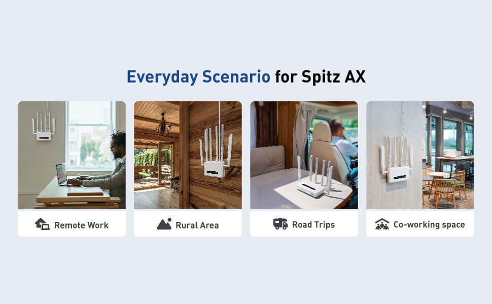
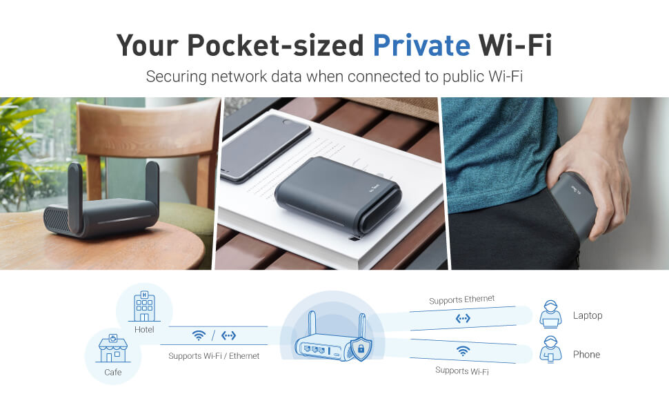

Product Listing
Visual content and promotional graphic design tailored to highlight key features, selling points, and specifications for GL.iNet products on Amazon.
Overview
These images showcase a variety of professional listing images created for GL.iNet. The designs highlight product features, packaging, and key selling points. Product listing images enhance product pages with eye-catching visuals, engaging text, and interactive layouts — building trust, boosting brand appeal, and converting browsing into purchases.
Focus
Turn technical router and networking specs into clear, scannable Amazon visuals that shoppers understand in seconds.
Feature clarity
Call out ports, speeds, VPN, dual SIM, and hardware so specs read at a glance on mobile and desktop.
Selling points
Frame benefits — remote office, travel Wi‑Fi, 8K streaming, security — with strong hierarchy and icons.
Photo + graphic
Combine product photography, retouching, and layout so packaging and devices feel premium and accurate.
Conversion
Design for the Amazon scroll: trust-building detail that supports the decision to add to cart.
Feature highlights
Listing panels focus on what matters on the product page: Wi‑Fi speed, VPN and security, dual-band performance, ports, and packaging contents — each framed for quick reading.
Use scenarios
Lifestyle and diagram layouts show where the product fits — remote work, suburban home, RV travel, shared office — and how cellular or Wi‑Fi setups connect in real environments.


Process
From product photography and retouch through layout and type, each panel is built for Amazon’s image guidelines and mobile-first viewing.
Plan
- Feature & benefit list
- Shot & layout brief
- Amazon image rules
Produce
- Product photography
- Photo retouch
- Icons & diagrams
Deliver
- Listing image set
- Scenario panels
- Ready for Amazon upload
Outcome
A full set of professional Amazon listing visuals for GL.iNet — feature callouts, lifestyle scenarios, and packaging detail that support discovery and conversion on product pages.